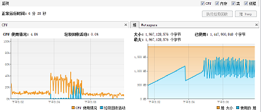

 <!DOCTYPE HTML>
<html>
<head><meta name="generator" content="Hexo 3.8.0">
  <meta charset="UTF-8">
  
    <title>PolarDB阿里初赛问题记录 PolarDB 阿里 中间件 比赛 性能 工程手册 | Timmy live</title>
    <meta name="viewport" content="width=device-width, initial-scale=1,user-scalable=no">
    
    <meta name="author" content="Lee">
    

    
    <meta name="description" content="PolarDB阿里初赛问题记录这篇纯碎是碎碎念记录。 每个value都是4KB，总共最多会写6400W个value，算下来就是64 * 1000 * 1000 * 4 * 1024 Bytes ≈ 256G。  每个value存储到文件中的时候，需要知道它在文件中的位置，这个位置是一个长整型，8 Bytes。Key也是8 Bytes。这两个值要放在一起，以便我们能在内存中构建起一对一的索引。而它们">
<meta name="keywords" content="PolarDB,阿里,中间件,比赛,性能">
<meta property="og:type" content="article">
<meta property="og:title" content="PolarDB阿里初赛问题记录">
<meta property="og:url" content="https://blog.quantm.club/2018/11/02/polarDB/index.html">
<meta property="og:site_name" content="Timmy live">
<meta property="og:description" content="PolarDB阿里初赛问题记录这篇纯碎是碎碎念记录。 每个value都是4KB，总共最多会写6400W个value，算下来就是64 * 1000 * 1000 * 4 * 1024 Bytes ≈ 256G。  每个value存储到文件中的时候，需要知道它在文件中的位置，这个位置是一个长整型，8 Bytes。Key也是8 Bytes。这两个值要放在一起，以便我们能在内存中构建起一对一的索引。而它们">
<meta property="og:locale" content="default">
<meta property="og:image" content="https://blog.quantm.club/2018/11/02/polarDB/add-param-gc.png">
<meta property="og:image" content="https://blog.quantm.club/2018/11/02/polarDB/delete-db-snap.png">
<meta property="og:image" content="https://blog.quantm.club/2018/11/02/polarDB/1876-512-300.png">
<meta property="og:image" content="https://blog.quantm.club/2018/11/02/polarDB/1876-512-300-gc.png">
<meta property="og:image" content="https://blog.quantm.club/2018/11/02/polarDB/last.png">
<meta property="og:image" content="https://blog.quantm.club/2018/11/02/polarDB/1876-512-128-gc.png">
<meta property="og:updated_time" content="2018-12-19T02:16:48.818Z">
<meta name="twitter:card" content="summary">
<meta name="twitter:title" content="PolarDB阿里初赛问题记录">
<meta name="twitter:description" content="PolarDB阿里初赛问题记录这篇纯碎是碎碎念记录。 每个value都是4KB，总共最多会写6400W个value，算下来就是64 * 1000 * 1000 * 4 * 1024 Bytes ≈ 256G。  每个value存储到文件中的时候，需要知道它在文件中的位置，这个位置是一个长整型，8 Bytes。Key也是8 Bytes。这两个值要放在一起，以便我们能在内存中构建起一对一的索引。而它们">
<meta name="twitter:image" content="https://blog.quantm.club/2018/11/02/polarDB/add-param-gc.png">

    
    <link rel="alternative" href="/atom.xml" title="Timmy live" type="application/atom+xml">
    
    
    <link rel="icon" href="/img/favicon.ico">
    
    
    <link rel="apple-touch-icon" href="/img/jacman.jpg">
    <link rel="apple-touch-icon-precomposed" href="/img/jacman.jpg">
    
    <link rel="stylesheet" href="/css/style.css">
</head>
</html>
  <body>
    <header>
      
<div>
		
			<div id="imglogo">
				<a href="/"></a>
			</div>
			
			<div id="textlogo">
				<h1 class="site-name"><a href="/" title="Timmy live">Timmy live</a></h1>
				<h2 class="blog-motto"></h2>
			</div>
			<div class="navbar"><a class="navbutton navmobile" href="#" title="Menu">
			</a></div>
			<nav class="animated">
				<ul>
					<ul>
					 
						<li><a href="/">主页Home</a></li>
					
						<li><a href="/archives">归档Archives</a></li>
					
						<li><a href="/about">关于About</a></li>
					
					<li>
 					
					<form class="search" action="//google.com/search" method="get" accept-charset="utf-8">
						<label>Search</label>
						<input type="search" id="search" name="q" autocomplete="off" maxlength="20" placeholder="Search">
						<input type="hidden" name="q" value="site:blog.quantm.club">
					</form>
					
					</li>
				</ul>
			</ul></nav>			
</div>
    </header>
    <div id="container">
      <div id="main" class="post" itemscope="" itemprop="blogPost">
  
	<article itemprop="articleBody"> 
		<header class="article-info clearfix">
  <h1 itemprop="name">
    
      <a href="/2018/11/02/polarDB/" title="PolarDB阿里初赛问题记录" itemprop="url">PolarDB阿里初赛问题记录</a>
  </h1>
  <p class="article-author">By
       
		<a href="/about" title="Lee" target="_blank" itemprop="author">Lee</a>
		
  </p><p class="article-time">
    <time datetime="2018-11-02T02:05:49.000Z" itemprop="datePublished"> Published 2018-11-02</time>
    
  </p>
</header>
	<div class="article-content">
		
		<div id="toc" class="toc-article">
			<strong class="toc-title">Contents</strong>
		
			<ol class="toc"><li class="toc-item toc-level-1"><a class="toc-link" href="#PolarDB阿里初赛问题记录"><span class="toc-number">1.</span> <span class="toc-text">PolarDB阿里初赛问题记录</span></a><ol class="toc-child"><li class="toc-item toc-level-3"><a class="toc-link" href="#测试流程"><span class="toc-number">1.0.1.</span> <span class="toc-text">测试流程</span></a><ol class="toc-child"><li class="toc-item toc-level-4"><a class="toc-link" href="#并发问题"><span class="toc-number">1.0.1.1.</span> <span class="toc-text">并发问题</span></a></li><li class="toc-item toc-level-4"><a class="toc-link" href="#key-index文件是否需要顺序加载"><span class="toc-number">1.0.1.2.</span> <span class="toc-text">key-index文件是否需要顺序加载</span></a></li><li class="toc-item toc-level-4"><a class="toc-link" href="#key的覆盖和value的覆盖"><span class="toc-number">1.0.1.3.</span> <span class="toc-text">key的覆盖和value的覆盖</span></a></li><li class="toc-item toc-level-4"><a class="toc-link" href="#mappedbyteBuffer的回收"><span class="toc-number">1.0.1.4.</span> <span class="toc-text">mappedbyteBuffer的回收</span></a></li><li class="toc-item toc-level-4"><a class="toc-link" href="#int-long溢出问题"><span class="toc-number">1.0.1.5.</span> <span class="toc-text">int long溢出问题</span></a></li></ol></li><li class="toc-item toc-level-3"><a class="toc-link" href="#测试结果"><span class="toc-number">1.0.2.</span> <span class="toc-text">测试结果</span></a></li></ol></li><li class="toc-item toc-level-2"><a class="toc-link" href="#性能问题"><span class="toc-number">1.1.</span> <span class="toc-text">性能问题</span></a><ol class="toc-child"><li class="toc-item toc-level-3"><a class="toc-link" href="#增加jvm参数"><span class="toc-number">1.1.1.</span> <span class="toc-text">增加jvm参数</span></a></li><li class="toc-item toc-level-3"><a class="toc-link" href="#无参数，使用intellij默认"><span class="toc-number">1.1.2.</span> <span class="toc-text">无参数，使用intellij默认</span></a></li><li class="toc-item toc-level-3"><a class="toc-link" href="#只增加内存大小"><span class="toc-number">1.1.3.</span> <span class="toc-text">只增加内存大小</span></a></li><li class="toc-item toc-level-3"><a class="toc-link" href="#订版本"><span class="toc-number">1.1.4.</span> <span class="toc-text">订版本</span></a></li><li class="toc-item toc-level-3"><a class="toc-link" href="#线上环境和线下环境的区别"><span class="toc-number">1.1.5.</span> <span class="toc-text">线上环境和线下环境的区别</span></a></li></ol></li></ol>
		
		</div>
		
		<h1 id="PolarDB阿里初赛问题记录"><a href="#PolarDB阿里初赛问题记录" class="headerlink" title="PolarDB阿里初赛问题记录"></a>PolarDB阿里初赛问题记录</h1><p>这篇纯碎是碎碎念记录。</p>
<pre><code>每个value都是4KB，总共最多会写6400W个value，算下来就是64 * 1000 * 1000 * 4 * 1024 Bytes ≈ 256G。

每个value存储到文件中的时候，需要知道它在文件中的位置，这个位置是一个长整型，8 Bytes。Key也是8 Bytes。这两个值要放在一起，以便我们能在内存中构建起一对一的索引。而它们的存储所耗的最大空间是(8 + 8) * 64 * 1000 * 1000 Bytes ≈ 1G。

Key和Value还需要落盘，所以它们也需要大约1GB的磁盘空间。
</code></pre><p>以上是大佬写的，我的初始实现是magic2 + key8 + magic2 + pos4落盘</p>
<pre><code>感觉浪费了四个magic位，不过这四位只会存盘不会存到内存。
4*8的整型数值存储为是2GB地址空间[带符号位，可以删除扩充到4GB]，然后2GB*4096位的长度，实际上可以存8T的磁盘，如果删除符号位可以存16T磁盘，应对测试环境的6400W条数据没有问题，灵位内存用key8+pos4，可以相对减少内存占用。
</code></pre><h3 id="测试流程"><a href="#测试流程" class="headerlink" title="测试流程"></a>测试流程</h3><ol>
<li>写入64W数据，读取64W数据</li>
<li>重启进程，读取64W数据</li>
<li>重启进程，读取64W数据过程中kill -9进程，然后再行重启读取64W</li>
</ol>
<p>测试过程发现</p>
<ul>
<li>1 失败  1成功  2  成功 1成功  2  成功 1成功  2  成功</li>
<li>1 成功  1失败  2  失败  1失败  2  失败  1失败  2  失败</li>
<li>初次操作，使用&lt;byte[], Integer&gt;组装concurrenthashmap，但是调整一直出错，自己的测试有毛病，提交测试之后还通过正确性测试。</li>
</ul>
<ol>
<li>以上两项测试的原因在于，同内存写入的时候，进行读取的操作，key值的内存数值一样，所以在第一次1里面成功。但是进程重启之后，byte[]的hashcode是会随着进程的不同而变化的，所以找不到key，进行get时候会报空。</li>
<li>没有覆盖的问题：我在写入key的时候，如果是覆盖性操作，就将值写入到oldPosition位置，但是发现连续进行1的测试流程时候，值并未覆盖到oldPosition，文件同样会增长，key数量也会增长，并未进行覆盖key操作。经过调试，发现byte[]的操作太过风骚，从文件读取出来的byte[]和测试生成的byte[]的来源不一样，所以hashcode不一样，同时也用到equal操作，于是也要重写equal操作，使用Array.equal代替。</li>
<li>发现byte[]直接写入hashmap会读取不到，对于基础类型数值，hashcode值每次jvm进程中数值都不一样，这影响key的分布和查找<br>于是使用bytebuffer，正确性检查没问题，不过超时，主要是因为性能太差，byte[]与bytebuffer的转换过程不能忍受</li>
<li>回归使用byte[],解决了hashcode的问题[仿照bytebuffer重写hash]之后，发现equal函数也不一样，会调用原生的==进行判断，于是改用array.equal进行判断</li>
<li>byte[]还是出问题，写入6400w的阶段总是读取校验出错，打印出数量不够6400W，总是差300-400个，然后发现，hashcode函数有问题，，重写，检验了3亿个hash值，确定不会重复之后提交，总算通过，最后成绩243.44秒，最好排35名，最差到55名</li>
</ol>
<h4 id="并发问题"><a href="#并发问题" class="headerlink" title="并发问题"></a>并发问题</h4><pre><code>Exception in thread &quot;Thread-45&quot; java.lang.ClassCastException: java.util.HashMap$Node cannot be cast to java.util.HashMap$TreeNode
    at java.util.HashMap$TreeNode.moveRootToFront(HashMap.java:1832)
    at java.util.HashMap$TreeNode.putTreeVal(HashMap.java:2012)
    at java.util.HashMap.putVal(HashMap.java:638)
    at java.util.HashMap.put(HashMap.java:612)
    at org.lee.MappedPageSource.lambda$initKeys$0(RaceConcurrentHashMap.java:1362)
    at java.lang.Thread.run(Thread.java:882)
</code></pre><p>多线程加载key-index文件的过程中，多线程put到一个hashmap会引发上述问题，多个线程修改同一映射,使用同步锁，顺序put解决</p>
<h4 id="key-index文件是否需要顺序加载"><a href="#key-index文件是否需要顺序加载" class="headerlink" title="key-index文件是否需要顺序加载"></a>key-index文件是否需要顺序加载</h4><p>不需要，因为key-pos内存的键值覆盖会直接覆盖value的pos位置，这样，一个键值映射的value文件位置是不变的，所以key-index文件中，不存在相同key的数据块。</p>
<h4 id="key的覆盖和value的覆盖"><a href="#key的覆盖和value的覆盖" class="headerlink" title="key的覆盖和value的覆盖"></a>key的覆盖和value的覆盖</h4><p>目前使用洁净的文件策略，由于mappedbyteBuffer的分配尽量以大数据块为主，所以存在kill -9情况下没有进行truncate的问题</p>
<ol>
<li>对于正常结束，调用truncat进行keyfile和valueFile的截断</li>
<li>强制退出情况下，下次初始化时候，加载key文件，对非MAGIC开始的字节，进行一刀切，后续字节被truncate，相应的后续value文件被截断，正确初始化count数量，便于下次写value的时候，写入count自增的地址</li>
</ol>
<h4 id="mappedbyteBuffer的回收"><a href="#mappedbyteBuffer的回收" class="headerlink" title="mappedbyteBuffer的回收"></a>mappedbyteBuffer的回收</h4><pre><code>请求的操作无法在使用用户映射区域打开的文件上执行 java nio
</code></pre><p>使用mappedbyteBuffer的缓存之后，尝试去关闭，报错，原来还在读的地方使用了buffer没有及时关闭导致的问题。</p>
<h4 id="int-long溢出问题"><a href="#int-long溢出问题" class="headerlink" title="int long溢出问题"></a>int long溢出问题</h4><pre><code>public byte[] readValue(int address) {
    if(address % 50000 == 0 &amp;&amp; System.currentTimeMillis()%5000==0)
      log.info(&quot;{}&quot;, address);
    long pos = address&lt;&lt;VALUE_BIT;
    byte[] result = new byte[1&lt;&lt;VALUE_BIT];
    long size= 0;
    try {
      size= raf.length();
      raf.seek(pos);
      raf.read(result);
    } catch (Exception e) {
      log.info(&quot;ADDRESS={} POS={} len={}&quot;, address, pos, size);
      e.printStackTrace();
    }
    return result;
  }
</code></pre><p>这里数量增长之后偶尔在seek操作时报错，java.io.IOException: Negative seek offset<br>因为存在内存中的position是int整型，映射文件position是乘以地址块4K（右移12），所以这里传参用整型，但是问题在于&lt;&lt;12之后是int这时候就会溢出了显示pos是一个负数。最后类型申明改为long就不会溢出了。【后来改用filechaanel进行pos位置的直接读取】</p>
<h3 id="测试结果"><a href="#测试结果" class="headerlink" title="测试结果"></a>测试结果</h3><p>640W的数据，调整了 initialCapacity 值之后，不会引起rehash操作，这个比较耗时</p>
<pre><code>Connected to the target VM, address: &#39;127.0.0.1:53096&#39;, transport: &#39;socket&#39;
13:37:30,512 INFO  org.lee.MappedPageSource.initKeys(RaceConcurrentHashMap.java:1343) - 0
13:37:30,556 INFO  org.lee.disk.App.test(App.java:30) - start write
13:40:46,510 INFO  org.lee.disk.App.test(App.java:35) - write elapsed 3115 ms
13:43:34,460 INFO  org.lee.disk.App.test(App.java:43) - detach assert read elapsed 363903 ms
</code></pre><h2 id="性能问题"><a href="#性能问题" class="headerlink" title="性能问题"></a>性能问题</h2><p><a href="https://blog.csdn.net/keketrtr/article/details/74448127" target="_blank" rel="noopener">https://blog.csdn.net/keketrtr/article/details/74448127</a><br>使用jvisualvm的插件GC进行判断，设置参数平截图，减少GC问题<br>以下是四张图，表示顺序写入+顺序读取640W次数的过程</p>
<h3 id="增加jvm参数"><a href="#增加jvm参数" class="headerlink" title="增加jvm参数"></a>增加jvm参数</h3><p>-server -Xms1536m -Xmx1536m -XX:MaxDirectMemorySize=512m -XX:MaxMetaspaceSize=300m -XX:NewRatio=1 -XX:+UseConcMarkSweepGC -XX:+UseParNewGC -XX:-UseBiasedLocking<br></p>
<h3 id="无参数，使用intellij默认"><a href="#无参数，使用intellij默认" class="headerlink" title="无参数，使用intellij默认"></a>无参数，使用intellij默认</h3><p></p>
<h3 id="只增加内存大小"><a href="#只增加内存大小" class="headerlink" title="只增加内存大小"></a>只增加内存大小</h3><p>-server -Xms1876m -Xmx1876m -XX:MaxDirectMemorySize=512m -XX:MaxMetaspaceSize=300m -XX:NewRatio=1 -XX:+UseConcMarkSweepGC -XX:+UseParNewGC -XX:-UseBiasedLocking<br></p>
<h3 id="订版本"><a href="#订版本" class="headerlink" title="订版本"></a>订版本</h3><p>-server -Xms1876m -Xmx1876m -XX:MaxDirectMemorySize=512m -XX:MaxMetaspaceSize=128m -XX:NewRatio=1 -XX:+UseConcMarkSweepGC -XX:+UseParNewGC -XX:-UseBiasedLocking<br></p>
<h3 id="线上环境和线下环境的区别"><a href="#线上环境和线下环境的区别" class="headerlink" title="线上环境和线下环境的区别"></a>线上环境和线下环境的区别</h3><p>线上64CPU， ssd云盘，它的IO性能和CPU性能和本地机器没有任何可比性，于是本地640W写入过程中，速度改善的方法，在线上可能速度变慢。<br>最后经过总结，云盘SSD的IO通道能同时支持大写文件的并发写入读取，由于IO足够，写入的时候如果是多文件写入，可以减少文件写入锁带来的占用问题，而线下环境中，IO性能差劲，单文件的写入效果远胜于多文件的写入。对于读取性能，线上环境直接使用CPU缓存进行二进制的读取，不使用缓存的方式远胜于使用内存缓存MappedByteBuffer的方式，而线下环境中，如果使用内存缓存，读取的性能会更好，这里主要差别在于64核CPU的计算和缓存速度与本地CPU的不同。</p>
  
	</div>
		<footer class="article-footer clearfix">
<div class="article-catetags">

<div class="article-categories">
  <span></span>
  <a class="article-category-link" href="/categories/工程手册/">工程手册</a>
</div>


  <div class="article-tags">
  
  <span></span> <a href="/tags/PolarDB/">PolarDB</a><a href="/tags/阿里/">阿里</a><a href="/tags/中间件/">中间件</a><a href="/tags/比赛/">比赛</a><a href="/tags/性能/">性能</a>
  </div>

</div>


	<div class="article-share" id="share">
	
	  <div data-url="https://blog.quantm.club/2018/11/02/polarDB/" data-title="PolarDB阿里初赛问题记录 | Timmy live" data-tsina="null" class="share clearfix">
	  </div>
	
	</div>


</footer>

   	       
	</article>
	
<nav class="article-nav clearfix">
 
 <div class="prev">
 <a href="/2018/11/15/docker-user-log/" title="docker-user-log">
  <strong>上一篇：</strong><br>
  <span>
  docker-user-log</span>
</a>
</div>


<div class="next">
<a href="/2018/10/21/docker-rep-maven/" title="docker-maven-plugin配置及SpringBoot使用">
 <strong>下一篇：</strong><br> 
 <span>docker-maven-plugin配置及SpringBoot使用
</span>
</a>
</div>

</nav>

	

</div>  
      <div class="openaside"><a class="navbutton" href="#" title="Show Sidebar"></a></div>

  <div id="toc" class="toc-aside">
  <strong class="toc-title">Contents</strong>
 
 <ol class="toc"><li class="toc-item toc-level-1"><a class="toc-link" href="#PolarDB阿里初赛问题记录"><span class="toc-number">1.</span> <span class="toc-text">PolarDB阿里初赛问题记录</span></a><ol class="toc-child"><li class="toc-item toc-level-3"><a class="toc-link" href="#测试流程"><span class="toc-number">1.0.1.</span> <span class="toc-text">测试流程</span></a><ol class="toc-child"><li class="toc-item toc-level-4"><a class="toc-link" href="#并发问题"><span class="toc-number">1.0.1.1.</span> <span class="toc-text">并发问题</span></a></li><li class="toc-item toc-level-4"><a class="toc-link" href="#key-index文件是否需要顺序加载"><span class="toc-number">1.0.1.2.</span> <span class="toc-text">key-index文件是否需要顺序加载</span></a></li><li class="toc-item toc-level-4"><a class="toc-link" href="#key的覆盖和value的覆盖"><span class="toc-number">1.0.1.3.</span> <span class="toc-text">key的覆盖和value的覆盖</span></a></li><li class="toc-item toc-level-4"><a class="toc-link" href="#mappedbyteBuffer的回收"><span class="toc-number">1.0.1.4.</span> <span class="toc-text">mappedbyteBuffer的回收</span></a></li><li class="toc-item toc-level-4"><a class="toc-link" href="#int-long溢出问题"><span class="toc-number">1.0.1.5.</span> <span class="toc-text">int long溢出问题</span></a></li></ol></li><li class="toc-item toc-level-3"><a class="toc-link" href="#测试结果"><span class="toc-number">1.0.2.</span> <span class="toc-text">测试结果</span></a></li></ol></li><li class="toc-item toc-level-2"><a class="toc-link" href="#性能问题"><span class="toc-number">1.1.</span> <span class="toc-text">性能问题</span></a><ol class="toc-child"><li class="toc-item toc-level-3"><a class="toc-link" href="#增加jvm参数"><span class="toc-number">1.1.1.</span> <span class="toc-text">增加jvm参数</span></a></li><li class="toc-item toc-level-3"><a class="toc-link" href="#无参数，使用intellij默认"><span class="toc-number">1.1.2.</span> <span class="toc-text">无参数，使用intellij默认</span></a></li><li class="toc-item toc-level-3"><a class="toc-link" href="#只增加内存大小"><span class="toc-number">1.1.3.</span> <span class="toc-text">只增加内存大小</span></a></li><li class="toc-item toc-level-3"><a class="toc-link" href="#订版本"><span class="toc-number">1.1.4.</span> <span class="toc-text">订版本</span></a></li><li class="toc-item toc-level-3"><a class="toc-link" href="#线上环境和线下环境的区别"><span class="toc-number">1.1.5.</span> <span class="toc-text">线上环境和线下环境的区别</span></a></li></ol></li></ol>
 
  </div>

<div id="asidepart">
<div class="closeaside"><a class="closebutton" href="#" title="Hide Sidebar"></a></div>
<aside class="clearfix">

  
<div class="categorieslist">
	<p class="asidetitle">Categories</p>
		<ul>
		
		  
			<li><a href="/categories/scala/" title="scala">scala<sup>1</sup></a></li>
		  
		
		  
			<li><a href="/categories/工具介绍/" title="工具介绍">工具介绍<sup>1</sup></a></li>
		  
		
		  
			<li><a href="/categories/工程手册/" title="工程手册">工程手册<sup>5</sup></a></li>
		  
		
		  
			<li><a href="/categories/搜索推荐/" title="搜索推荐">搜索推荐<sup>3</sup></a></li>
		  
		
		  
			<li><a href="/categories/环境部署/" title="环境部署">环境部署<sup>5</sup></a></li>
		  
		
		</ul>
</div>


  
<div class="tagslist">
	<p class="asidetitle">Tags</p>
		<ul class="clearfix">
		
			
				<li><a href="/tags/centos/" title="centos">centos<sup>4</sup></a></li>
			
		
			
				<li><a href="/tags/sbt/" title="sbt">sbt<sup>2</sup></a></li>
			
		
			
				<li><a href="/tags/推荐/" title="推荐">推荐<sup>2</sup></a></li>
			
		
			
				<li><a href="/tags/论文/" title="论文">论文<sup>2</sup></a></li>
			
		
			
				<li><a href="/tags/相关性/" title="相关性">相关性<sup>2</sup></a></li>
			
		
			
				<li><a href="/tags/hadoop/" title="hadoop">hadoop<sup>2</sup></a></li>
			
		
			
				<li><a href="/tags/协同过滤/" title="协同过滤">协同过滤<sup>1</sup></a></li>
			
		
			
				<li><a href="/tags/cas/" title="cas">cas<sup>1</sup></a></li>
			
		
			
				<li><a href="/tags/https/" title="https">https<sup>1</sup></a></li>
			
		
			
				<li><a href="/tags/电商/" title="电商">电商<sup>1</sup></a></li>
			
		
			
				<li><a href="/tags/web/" title="web">web<sup>1</sup></a></li>
			
		
			
				<li><a href="/tags/服务器/" title="服务器">服务器<sup>1</sup></a></li>
			
		
			
				<li><a href="/tags/系统维护/" title="系统维护">系统维护<sup>1</sup></a></li>
			
		
			
				<li><a href="/tags/Hadoop/" title="Hadoop">Hadoop<sup>1</sup></a></li>
			
		
			
				<li><a href="/tags/python/" title="python">python<sup>1</sup></a></li>
			
		
			
				<li><a href="/tags/mysql/" title="mysql">mysql<sup>1</sup></a></li>
			
		
			
				<li><a href="/tags/单点登录/" title="单点登录">单点登录<sup>1</sup></a></li>
			
		
			
				<li><a href="/tags/yarn-client/" title="yarn-client">yarn-client<sup>1</sup></a></li>
			
		
			
				<li><a href="/tags/zookeeper/" title="zookeeper">zookeeper<sup>1</sup></a></li>
			
		
			
				<li><a href="/tags/nexus/" title="nexus">nexus<sup>1</sup></a></li>
			
		
		</ul>
</div>


  <div class="linkslist">
  <p class="asidetitle">Links</p>
    <ul>
        
          <li>
            
            	<a href="http://www.hoterran.info" target="_blank" title="一个面向程序员交流分享的新一代社区">运维与开发</a>
            
          </li>
        
          <li>
            
            	<a href="http://club.alibabatech.org/" target="_blank" title="ali Blog">ali Blog</a>
            
          </li>
        
    </ul>
</div>

  <div class="rsspart">
	<a href="/atom.xml" target="_blank" title="rss">RSS</a>
</div>

  
  <div class="tagcloudlist">
    <p class="asidetitle">Tag Cloud</p>
    <div class="tagcloudlist clearfix">
       <a href="/tags/Actor/" style="font-size: 10px;">Actor</a> <a href="/tags/Akka/" style="font-size: 10px;">Akka</a> <a href="/tags/CI/" style="font-size: 10px;">CI</a> <a href="/tags/Docker/" style="font-size: 10px;">Docker</a> <a href="/tags/Hadoop/" style="font-size: 10px;">Hadoop</a> <a href="/tags/OAuth/" style="font-size: 10px;">OAuth</a> <a href="/tags/PolarDB/" style="font-size: 10px;">PolarDB</a> <a href="/tags/Reactive/" style="font-size: 10px;">Reactive</a> <a href="/tags/Scala/" style="font-size: 10px;">Scala</a> <a href="/tags/Spring-Boot/" style="font-size: 10px;">Spring Boot</a> <a href="/tags/Stream/" style="font-size: 10px;">Stream</a> <a href="/tags/cas/" style="font-size: 10px;">cas</a> <a href="/tags/centos/" style="font-size: 20px;">centos</a> <a href="/tags/dubbo/" style="font-size: 10px;">dubbo</a> <a href="/tags/eclipse/" style="font-size: 10px;">eclipse</a> <a href="/tags/hadoop/" style="font-size: 15px;">hadoop</a> <a href="/tags/https/" style="font-size: 10px;">https</a> <a href="/tags/mathjax/" style="font-size: 10px;">mathjax</a> <a href="/tags/maven/" style="font-size: 10px;">maven</a> <a href="/tags/mysql/" style="font-size: 10px;">mysql</a> <a href="/tags/nexus/" style="font-size: 10px;">nexus</a> <a href="/tags/nexus3/" style="font-size: 10px;">nexus3</a> <a href="/tags/plugin/" style="font-size: 10px;">plugin</a> <a href="/tags/python/" style="font-size: 10px;">python</a> <a href="/tags/sbt/" style="font-size: 15px;">sbt</a> <a href="/tags/spring/" style="font-size: 10px;">spring</a> <a href="/tags/web/" style="font-size: 10px;">web</a> <a href="/tags/yarn-client/" style="font-size: 10px;">yarn-client</a> <a href="/tags/zookeeper/" style="font-size: 10px;">zookeeper</a> <a href="/tags/中间件/" style="font-size: 10px;">中间件</a> <a href="/tags/代码约定/" style="font-size: 10px;">代码约定</a> <a href="/tags/协同过滤/" style="font-size: 10px;">协同过滤</a> <a href="/tags/单点登录/" style="font-size: 10px;">单点登录</a> <a href="/tags/大数据/" style="font-size: 10px;">大数据</a> <a href="/tags/工具/" style="font-size: 10px;">工具</a> <a href="/tags/开发/" style="font-size: 10px;">开发</a> <a href="/tags/性能/" style="font-size: 10px;">性能</a> <a href="/tags/持续集成/" style="font-size: 10px;">持续集成</a> <a href="/tags/推荐/" style="font-size: 15px;">推荐</a> <a href="/tags/插件/" style="font-size: 10px;">插件</a> <a href="/tags/服务器/" style="font-size: 10px;">服务器</a> <a href="/tags/比赛/" style="font-size: 10px;">比赛</a> <a href="/tags/电商/" style="font-size: 10px;">电商</a> <a href="/tags/相关性/" style="font-size: 15px;">相关性</a> <a href="/tags/系统搭建/" style="font-size: 10px;">系统搭建</a> <a href="/tags/系统维护/" style="font-size: 10px;">系统维护</a> <a href="/tags/论文/" style="font-size: 15px;">论文</a> <a href="/tags/语法/" style="font-size: 10px;">语法</a> <a href="/tags/运维/" style="font-size: 10px;">运维</a> <a href="/tags/阿里/" style="font-size: 10px;">阿里</a>
    </div>
  </div>


  
<div class="github-card">
<p class="asidetitle">location Statics</p>
<script type="text/javascript" src="//rf.revolvermaps.com/0/0/8.js?i=50om5cdoa3h&amp;m=7&amp;c=ff0000&amp;cr1=ffffff&amp;f=arial&amp;l=49" async="async"></script>
</div>


</aside>
</div>
    </div>
    <footer><div id="footer">
	
	<div class="line">
		<span></span>
		<div class="author"></div>
	</div>
	
	
	<section class="info">
		<p> Christiansted, United States Virgin Islands <br>
			believer it or not</p>
	</section>
	 
	<div class="social-font">
		
		<a href="http://weibo.com/3665494445" target="_blank" class="icon-weibo" title="微博"></a>
		
		
		
		
		
		
		
		
		
		
	</div>
			
		

		<p class="copyright">
		Powered by <a href="http://hexo.io" target="_blank" title="hexo">hexo</a> and Theme by <a href="https://github.com/wuchong/jacman" target="_blank" title="Jacman">Jacman</a> © 2019 
		
		<a href="/about" target="_blank" title="Lee">Lee</a>
		
		
		</p>
</div>
</footer>
    <script src="/js/jquery-2.0.3.min.js"></script>
<script src="/js/jquery.imagesloaded.min.js"></script>
<script src="/js/gallery.js"></script>
<script src="/js/jquery.qrcode-0.12.0.min.js"></script>
<script src="/js/prettify.js"></script>
<link rel="stylesheet" href="/fancybox/prettify.css" media="screen" type="text/css">

<script type="text/javascript">
$(document).ready(function(){ 
  $('pre').addClass('prettyprint linenums').attr('style', 'overflow:scroll;');
  prettyPrint();

  $('.navbar').click(function(){
    $('header nav').toggleClass('shownav');
  });
  var myWidth = 0;
  function getSize(){
    if( typeof( window.innerWidth ) == 'number' ) {
      myWidth = window.innerWidth;
    } else if( document.documentElement && document.documentElement.clientWidth) {
      myWidth = document.documentElement.clientWidth;
    };
  };
  var m = $('#main'),
      a = $('#asidepart'),
      c = $('.closeaside'),
      o = $('.openaside');
  c.click(function(){
    a.addClass('fadeOut').css('display', 'none');
    o.css('display', 'block').addClass('fadeIn');
    m.addClass('moveMain');
  });
  o.click(function(){
    o.css('display', 'none').removeClass('beforeFadeIn');
    a.css('display', 'block').removeClass('fadeOut').addClass('fadeIn');      
    m.removeClass('moveMain');
  });
  $(window).scroll(function(){
    o.css("top",Math.max(80,260-$(this).scrollTop()));
  });
  
  $(window).resize(function(){
    getSize(); 
    if (myWidth >= 1024) {
      $('header nav').removeClass('shownav');
    }else{
      m.removeClass('moveMain');
      a.css('display', 'block').removeClass('fadeOut');
      o.css('display', 'none');
      
      $('#toc.toc-aside').css('display', 'none');
        
    }
  });
});
</script>

<script type="text/javascript">
$(document).ready(function(){ 
  var ai = $('.article-content>iframe'),
      ae = $('.article-content>embed'),
      t  = $('#toc'),
      ta = $('#toc.toc-aside'),
      o  = $('.openaside'),
      c  = $('.closeaside');
  if(ai.length>0){
    ai.wrap('<div class="video-container" />');
  };
  if(ae.length>0){
   ae.wrap('<div class="video-container" />');
  };
  c.click(function(){
    ta.css('display', 'block').addClass('fadeIn');
  });
  o.click(function(){
    ta.css('display', 'none');
  });
  $(window).scroll(function(){
    ta.css("top",Math.max(140,320-$(this).scrollTop()));
  });
});
</script>


<script type="text/javascript">
$(document).ready(function(){ 
  var $this = $('.share'),
      url = $this.attr('data-url'),
      encodedUrl = encodeURIComponent(url),
      title = $this.attr('data-title'),
      tsina = $this.attr('data-tsina'),
      description = $this.attr('description');
  var html = [
  '<div class="hoverqrcode clearfix"></div>',
  '<a class="overlay" id="qrcode"></a>',
  '<a href="https://www.facebook.com/sharer.php?u=' + encodedUrl + '" class="article-share-facebook" target="_blank" title="Facebook"></a>',
  '<a href="https://twitter.com/intent/tweet?url=' + encodedUrl + '" class="article-share-twitter" target="_blank" title="Twitter"></a>',
  '<a href="#qrcode" class="article-share-qrcode" title="微信"></a>',
  '<a href="http://widget.renren.com/dialog/share?resourceUrl=' + encodedUrl + '&srcUrl=' + encodedUrl + '&title=' + title +'" class="article-share-renren" target="_blank" title="人人"></a>',
  '<a href="http://service.weibo.com/share/share.php?title='+title+'&url='+encodedUrl +'&ralateUid='+ tsina +'&searchPic=true&style=number' +'" class="article-share-weibo" target="_blank" title="微博"></a>',
  '<span title="Share to"></span>'
  ].join('');
  $this.append(html);

  $('.hoverqrcode').hide();

  var myWidth = 0;
  function updatehoverqrcode(){
    if( typeof( window.innerWidth ) == 'number' ) {
      myWidth = window.innerWidth;
    } else if( document.documentElement && document.documentElement.clientWidth) {
      myWidth = document.documentElement.clientWidth;
    };
    var qrsize = myWidth > 1024 ? 200:100;
    var options = {render: 'image', size: qrsize, fill: '#2ca6cb', text: url, radius: 0.5, quiet: 1};
    var p = $('.article-share-qrcode').position();
    $('.hoverqrcode').empty().css('width', qrsize).css('height', qrsize)
                          .css('left', p.left-qrsize/2+20).css('top', p.top-qrsize-10)
                          .qrcode(options);
  };
  $(window).resize(function(){
    $('.hoverqrcode').hide();
  });
  $('.article-share-qrcode').click(function(){
    updatehoverqrcode();
    $('.hoverqrcode').toggle();
  });
  $('.article-share-qrcode').hover(function(){}, function(){
      $('.hoverqrcode').hide();
  });
});   
</script>


<link rel="stylesheet" href="/fancybox/jquery.fancybox.css" media="screen" type="text/css">
<script src="/fancybox/jquery.fancybox.pack.js"></script>
<script type="text/javascript">
$(document).ready(function(){ 
  $('.article-content').each(function(i){
    $(this).find('img').each(function(){
      if ($(this).parent().hasClass('fancybox')) return;
      var alt = this.alt;
      if (alt) $(this).after('<span class="caption">' + alt + '</span>');
      $(this).wrap('<a href="' + this.src + '" title="' + alt + '" class="fancybox"></a>');
    });
    $(this).find('.fancybox').each(function(){
      $(this).attr('rel', 'article' + i);
    });
  });
  if($.fancybox){
    $('.fancybox').fancybox();
  }
}); 
</script>


<!-- Analytics Begin -->

<script type="text/javascript">
(function(i,s,o,g,r,a,m){i['GoogleAnalyticsObject']=r;i[r]=i[r]||function(){
  (i[r].q=i[r].q||[]).push(arguments)},i[r].l=1*new Date();a=s.createElement(o),
  m=s.getElementsByTagName(o)[0];a.async=1;a.src=g;m.parentNode.insertBefore(a,m)
})(window,document,'script','//www.google-analytics.com/analytics.js','ga');
ga('create', 'UA-128202528-1', 'blog.quantm.club');  
ga('send', 'pageview');
</script>


<!-- Analytics End -->

<!-- Totop Begin -->

	<div id="totop">
	<a title="Back to Top"></a>
	</div>
	<script src="/js/totop.js"></script>

<!-- Totop End -->

<!-- MathJax Begin -->
<!-- mathjax config similar to math.stackexchange -->


<!-- MathJax End -->

<!-- Tiny_search Begin -->

<!-- Tiny_search End -->
  </body>
</html>
